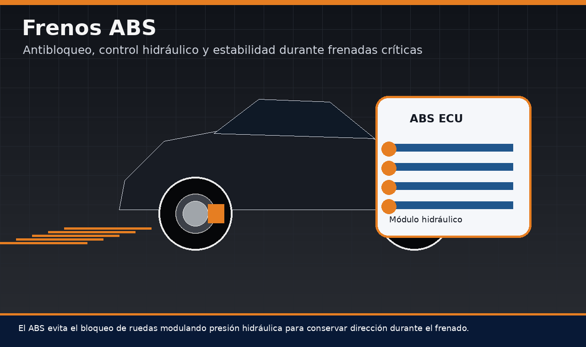
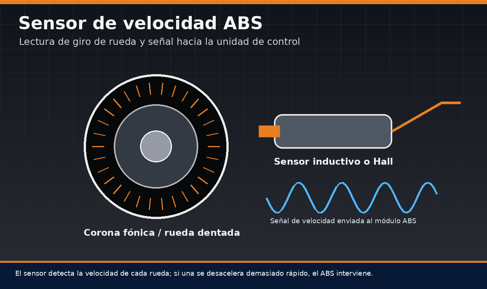
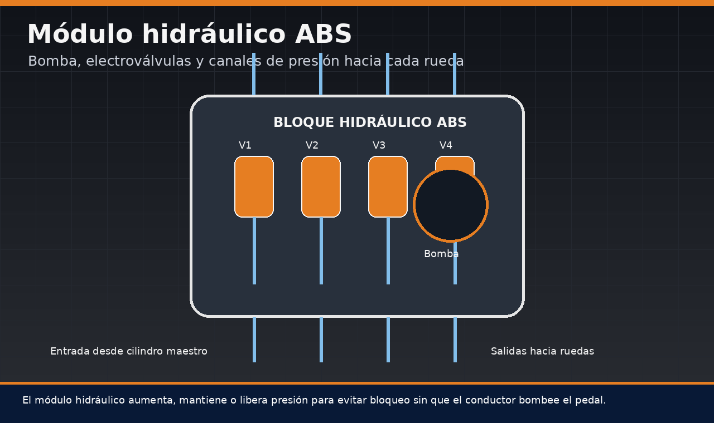
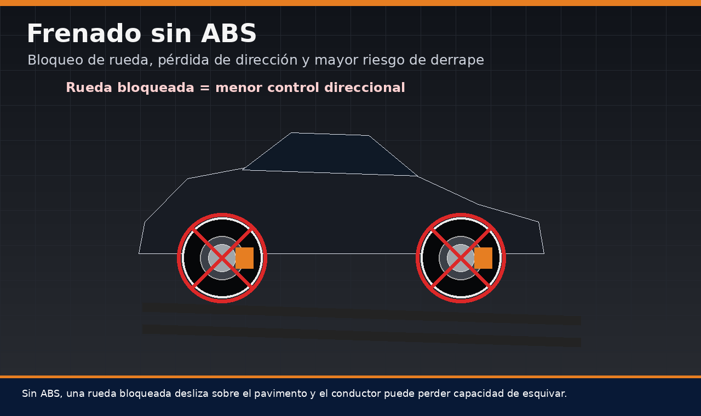
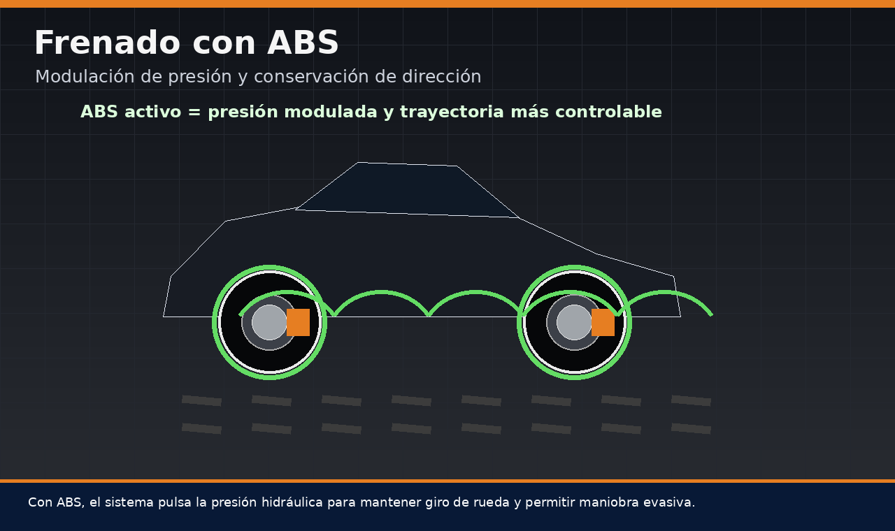
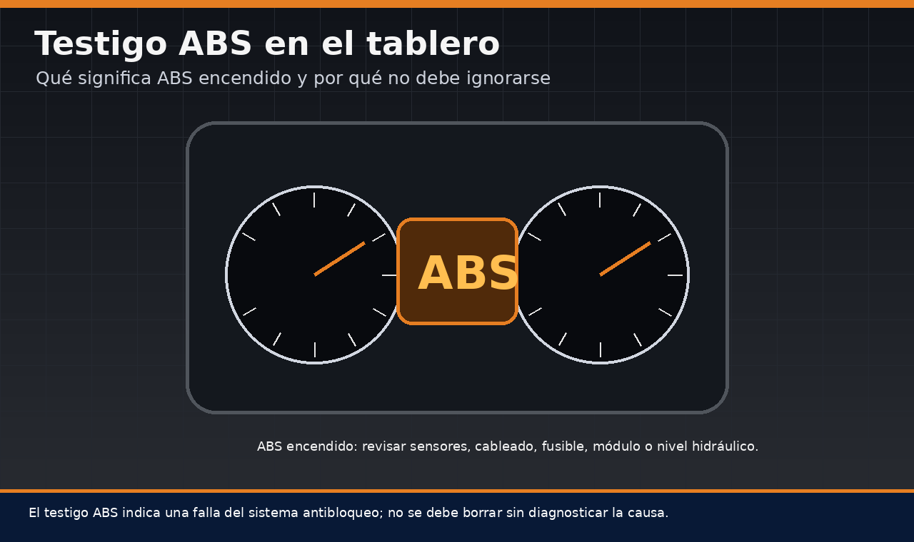
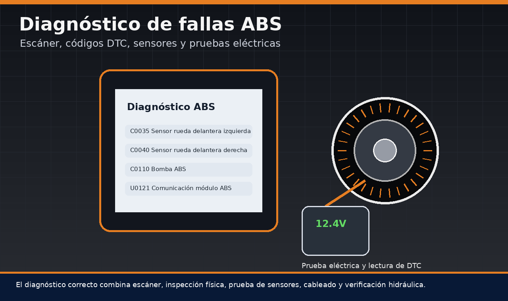
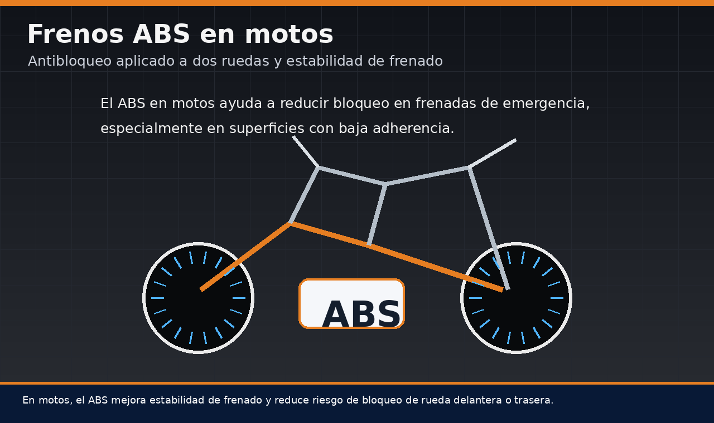

Los frenos ABS son uno de los sistemas de seguridad activa más importantes del vehículo moderno. Su nombre proviene de Anti-lock Braking System, es decir, sistema antibloqueo de frenos. La función ABS frenos consiste en evitar que las ruedas se bloqueen durante una frenada intensa, permitiendo que el conductor conserve mayor capacidad de dirección y control. En esta guía se explica qué son los frenos ABS, cómo funcionan, cuáles son sus componentes, qué significa ABS en el tablero del carro, cuáles son las fallas más comunes y cómo debe abordarse un diagnóstico profesional.

Contenido del artículo
- Capítulo 1: Qué son los frenos ABS y cuál es su función
- Capítulo 2: Funcionamiento del sistema ABS y sus partes
- Capítulo 3: Diagrama de frenos ABS y módulo hidráulico
- Capítulo 4: Frenado sin ABS vs frenado con ABS
- Capítulo 5: Qué significa ABS en el tablero del carro
- Capítulo 6: Fallas frenos ABS y soluciones
- Capítulo 7: Tipos de sistema ABS y ABS en motos
- Capítulo 8: Mantenimiento, diagnóstico y conclusión técnica
Capítulo 1: Qué son los Frenos ABS y cuál es su Función
Para comprender qué son los frenos ABS, primero debe entenderse qué ocurre cuando una rueda se bloquea. Durante una frenada de emergencia, el conductor puede aplicar una fuerza elevada sobre el pedal. Si la presión hidráulica supera la capacidad de adherencia entre neumático y pavimento, la rueda deja de girar y comienza a deslizar. En ese momento, el neumático ya no rueda de forma controlada, sino que patina sobre la superficie.
Una rueda bloqueada reduce la capacidad de dirección. Aunque el conductor gire el volante, el vehículo puede continuar en línea recta porque el neumático perdió parte de su capacidad de generar fuerza lateral. Aquí aparece la función ABS frenos: detectar el inicio del bloqueo y modular la presión de frenado muchas veces por segundo para que la rueda siga girando dentro de un rango útil.
En términos simples, el ABS no tiene como objetivo principal hacer que el vehículo siempre frene en menor distancia en cualquier superficie. Su mayor valor está en permitir que el conductor mantenga control direccional durante una frenada fuerte. En asfalto seco puede ayudar a optimizar la frenada, pero en superficies como grava, tierra suelta o nieve, la distancia puede variar. Aun así, la capacidad de esquivar un obstáculo suele ser mucho mejor con ABS que con ruedas completamente bloqueadas.
Capítulo 2: Funcionamiento del Sistema ABS y sus Partes
El funcionamiento del sistema ABS y sus partes se basa en tres acciones principales: medir la velocidad de cada rueda, interpretar si existe riesgo de bloqueo y modificar la presión hidráulica del freno en la rueda afectada. Este proceso ocurre de forma automática, sin que el conductor tenga que bombear el pedal.
Cuando se habla de sistema de frenos ABS componentes, normalmente se hace referencia a sensores de velocidad de rueda, corona fónica o anillo reluctor, unidad electrónica de control, módulo hidráulico, bomba de retorno, electroválvulas, cableado, fusibles, líneas hidráulicas, cilindro maestro, cálipers o mordazas, discos, pastillas y líquido de frenos. Aunque el ABS es un sistema electrónico-hidráulico, su funcionamiento depende también del estado físico de los frenos convencionales.
Sensores de velocidad de rueda
Cada rueda equipada con ABS cuenta con un sensor que mide su velocidad de giro. Ese sensor puede ser inductivo o de efecto Hall, dependiendo del diseño del vehículo. Su señal permite que la unidad de control compare el comportamiento de las ruedas entre sí. Si una rueda reduce su velocidad de forma demasiado rápida respecto a las demás, el sistema interpreta que está cerca del bloqueo.
Un sensor sucio, dañado, desconectado o con cableado interrumpido puede generar fallas frenos ABS y encender el testigo en el tablero. Por eso, antes de culpar al módulo hidráulico, siempre debe revisarse el estado de sensores, conectores y anillos de lectura.

La unidad electrónica del ABS recibe señales de los sensores y calcula si debe intervenir. Si detecta riesgo de bloqueo, ordena al módulo hidráulico modificar la presión. Esta intervención puede sentirse en el pedal como una vibración o pulsación rápida. Ese comportamiento es normal durante una frenada de emergencia con ABS activo.
Capítulo 3: Diagrama de Frenos ABS y Módulo Hidráulico
Un diagrama de frenos ABS básico incluye el pedal de freno, servofreno, cilindro maestro, líneas hidráulicas, módulo ABS, sensores de velocidad y frenos en cada rueda. En condiciones normales, el sistema permite que la presión hidráulica llegue a los cálipers como en un sistema convencional. La diferencia aparece cuando la unidad ABS detecta una tendencia de bloqueo y decide modular esa presión.
Módulo hidráulico y electroválvulas
El módulo hidráulico es uno de los componentes más importantes del sistema. En su interior existen canales de fluido, electroválvulas y una bomba. Las electroválvulas pueden mantener, liberar o aumentar presión según la orden de la unidad electrónica. Esta modulación permite que la rueda recupere giro sin que el conductor suelte completamente el pedal.
En una frenada crítica, el proceso puede repetirse muchas veces por segundo. El conductor solo debe mantener presión firme y constante sobre el pedal, mientras el sistema gestiona la presión hidráulica. Por eso, en vehículos con ABS, no se recomienda bombear el pedal durante una emergencia como se hacía antiguamente en vehículos sin antibloqueo.

Capítulo 4: Frenado sin ABS vs Frenado con ABS
La diferencia entre un frenado sin ABS y un frenado con ABS se aprecia especialmente en maniobras de emergencia. En un vehículo sin ABS, si el conductor pisa el freno con demasiada fuerza, una o varias ruedas pueden bloquearse. Cuando eso ocurre, la trayectoria se vuelve difícil de corregir y el vehículo puede deslizarse hacia el obstáculo.
Qué pasa cuando una rueda se bloquea
Una rueda bloqueada pierde capacidad de rodadura. En vez de girar y permitir que el dibujo del neumático trabaje, la goma se arrastra sobre el pavimento. Esto genera calor, desgaste localizado y pérdida de control. En superficies mojadas, la situación se agrava porque la adherencia disponible es menor.
Si el conductor intenta esquivar mientras las ruedas delanteras están bloqueadas, la respuesta de dirección será muy limitada. Esa es una de las razones por las que el sistema ABS se considera una tecnología de seguridad activa: no solo ayuda a frenar, también ayuda a conservar capacidad de maniobra.

Cómo actúa el ABS durante una frenada crítica
Con ABS activo, el sistema detecta la desaceleración excesiva de una rueda y libera presión de forma momentánea. Luego vuelve a aplicar presión si la rueda recupera giro. Este ciclo ocurre rápidamente, generando la sensación de pulsación en el pedal. Esa vibración no significa que el sistema esté fallando; significa que está interviniendo.
La ventaja práctica es que el neumático se mantiene más cerca de una condición de rodadura controlada. Esto permite que el conductor frene y gire al mismo tiempo con mayor probabilidad de mantener la trayectoria.

Capítulo 5: Qué significa ABS en el Tablero del Carro
Una de las dudas más frecuentes es qué significa ABS en el tablero del carro. Cuando el testigo ABS se enciende y permanece encendido, indica que la unidad de control detectó una anomalía en el sistema antibloqueo. Esto no siempre significa que el vehículo se quedó sin frenos, pero sí significa que la función antibloqueo podría estar desactivada o limitada.
Testigo ABS encendido
El testigo puede encenderse por múltiples causas: sensor de rueda dañado, cable cortado, anillo reluctor sucio o roto, bajo voltaje de batería, fusible defectuoso, problema en el módulo hidráulico, falla de comunicación o incluso bajo nivel de líquido de frenos en algunos sistemas relacionados.
Mucha gente busca cómo quitar el ABS del tablero, pero lo correcto no es simplemente borrar la luz. Quitar el aviso sin reparar la causa puede ocultar un problema de seguridad. El procedimiento correcto es escanear, leer códigos de falla, revisar datos en vivo, reparar el componente afectado y recién después borrar el código de avería si corresponde.

Capítulo 6: Fallas Frenos ABS y Soluciones
Las fallas frenos ABS pueden tener origen eléctrico, hidráulico, mecánico o electrónico. Por eso, un diagnóstico serio no debe basarse en adivinanzas. La búsqueda “fallas y soluciones en el sistema de frenos ABS” suele llevar a respuestas rápidas, pero en la práctica es necesario revisar el sistema por etapas.
Diagnóstico con escáner y pruebas eléctricas
El primer paso para saber cómo arreglar el ABS de mi carro es leer los códigos de falla con un escáner compatible. Un código puede indicar sensor delantero izquierdo, sensor trasero derecho, señal incoherente, falla de bomba, problema de comunicación o alimentación eléctrica deficiente. Sin esa información, se corre el riesgo de cambiar piezas innecesariamente.
Después de leer códigos, conviene observar datos en vivo. Si una rueda marca velocidad cero mientras las demás registran movimiento, puede existir un problema en el sensor, cableado, conector o anillo de lectura. También se debe revisar continuidad eléctrica, alimentación, resistencia del sensor cuando aplique y estado físico de conectores expuestos a agua, polvo o golpes.

6.1 Fallas comunes del sistema ABS
Una de las fallas más comunes es el sensor de velocidad dañado. También son frecuentes los cables partidos cerca de la rueda, conectores sulfatados, anillos reluctores sucios, rodamientos con sensor integrado defectuoso o problemas de bajo voltaje. En algunos casos, la falla puede estar en el módulo ABS, pero este diagnóstico debe confirmarse antes de reemplazarlo, porque suele ser una pieza costosa.
- Sensor de rueda defectuoso: puede generar lectura intermitente o pérdida total de señal.
- Anillo reluctor dañado: produce señales erráticas aunque el sensor esté en buen estado.
- Cableado cortado: frecuente en zonas cercanas a ruedas por movimiento, agua o golpes.
- Bajo voltaje: una batería débil puede afectar módulos electrónicos, incluido el ABS.
- Fusible o relé defectuoso: puede dejar sin alimentación parte del sistema.
- Módulo hidráulico con falla: puede afectar bomba, válvulas o comunicación electrónica.
6.2 Cómo quitar el ABS del tablero correctamente
La forma correcta de quitar el ABS del tablero es reparar la causa que encendió el testigo. Borrar el código con escáner sin solucionar la avería solo hará que la luz regrese. En algunos casos, después de reemplazar un sensor o reparar un cable, el sistema puede apagar el testigo tras circular unos metros y confirmar señales correctas. En otros casos, se requiere borrar el código manualmente con equipo de diagnóstico.
Si alguien busca cómo arreglar el ABS de mi carro, el orden lógico es: revisar fusibles, verificar batería, escanear el módulo ABS, inspeccionar sensores, comprobar cableado, revisar anillos de lectura y confirmar que el sistema hidráulico no tenga fallas. Solo después de ese proceso se puede hablar de una reparación confiable.
Capítulo 7: Tipos de Sistema ABS y ABS en Motos
Existen varios tipos de sistema ABS según el número de canales y sensores. Un sistema básico puede controlar dos ruedas de forma conjunta, mientras que sistemas más avanzados utilizan cuatro sensores y cuatro canales, permitiendo control independiente en cada rueda. En vehículos modernos, el ABS suele integrarse con control de estabilidad, control de tracción y asistencia de frenado.
7.1 Tipos de ABS según canales
Un ABS de un canal puede actuar sobre un eje o rueda específica, mientras que uno de tres o cuatro canales permite una modulación más precisa. En automóviles modernos, el sistema más completo suele incluir sensor en cada rueda y control independiente de presión. Esto mejora la capacidad de adaptación durante frenadas en superficies con adherencia desigual, por ejemplo, cuando un lado del vehículo pisa asfalto seco y el otro una zona mojada.
Qué son frenos ABS en motos
La búsqueda “qué son frenos ABS en motos” es cada vez más común porque muchas motocicletas modernas ya incorporan antibloqueo. En una moto, el ABS cumple la misma función general: evitar bloqueo de rueda durante una frenada intensa. Sin embargo, la dinámica es más delicada porque el bloqueo de la rueda delantera puede provocar pérdida rápida de estabilidad.
En motos, el ABS puede ser de un canal o dos canales. Un sistema de dos canales controla rueda delantera y trasera por separado. Algunos modelos avanzados incluso incorporan ABS en curva, que considera la inclinación de la moto mediante sensores inerciales para modular la frenada de forma más sofisticada.

Capítulo 8: Mantenimiento, Diagnóstico y Conclusión Técnica
El mantenimiento del sistema ABS no debe separarse del mantenimiento general de frenos. Un vehículo con discos deformados, pastillas cristalizadas, líquido contaminado o neumáticos desgastados no frenará correctamente aunque el ABS esté operativo. El sistema antibloqueo ayuda a controlar presión, pero no compensa completamente componentes mecánicos en mal estado.
Es recomendable revisar periódicamente el nivel y estado del líquido de frenos, inspeccionar sensores en cada rueda, mantener conectores limpios, evitar golpes en cables cercanos al cubo de rueda y atender cualquier luz ABS en el tablero. También conviene recordar que después de trabajos en rodamientos, suspensión o frenos, un cable de sensor mal colocado puede terminar rozando y fallando con el movimiento de la rueda.
8.1 Procedimiento preventivo recomendado
- Revisar el tablero: confirmar si el testigo ABS enciende al dar contacto y se apaga al arrancar.
- Inspeccionar sensores: revisar conectores, cableado y fijación cerca de cada rueda.
- Verificar frenos base: comprobar discos, pastillas, cálipers, mangueras y líquido de frenos.
- Escanear códigos: leer fallas almacenadas si el testigo permanece encendido.
- Analizar datos en vivo: verificar que todas las ruedas reporten velocidad coherente.
- Reparar antes de borrar: eliminar la causa del problema antes de borrar códigos.
En conclusión, los frenos ABS son una pieza fundamental de la seguridad activa. Comprender el funcionamiento del sistema ABS y sus partes permite interpretar mejor las fallas, evitar diagnósticos apresurados y mantener el vehículo en condiciones más seguras. Si el testigo ABS aparece en el tablero, no debe ignorarse ni taparse: debe diagnosticarse. Un sistema ABS operativo puede marcar la diferencia entre una frenada controlada y una pérdida de dirección en una situación crítica.